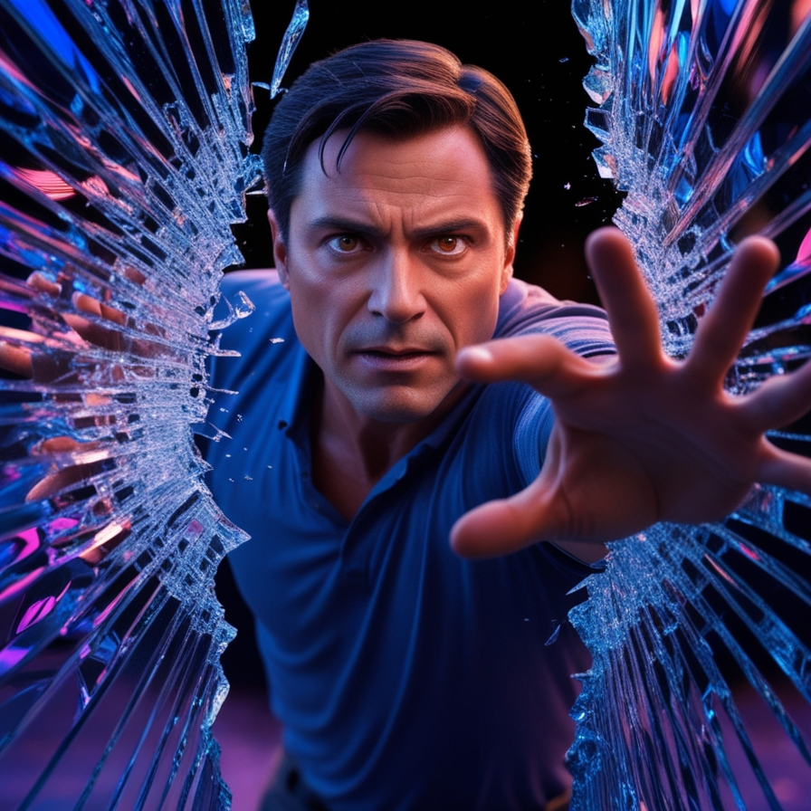

 A falmászás több mint sport: egy belső utazás, amely segít felfedezni, mire vagy képes. Minden mozdulat egy újabb lépés a határaid kitolása felé, miközben magabiztosabbá és bátrabbá válsz. A falakon túl a mindennapok kihívásait is könnyebben fogod leküzdeni.
Ha unod a szokásos edzéseket, a falmászás tökéletes alternatíva! Ez a sport nemcsak az izmaidat formálja, hanem fejleszti az állóképességedet és az egyensúlyodat is. Minden mászás egy játékos edzés, ahol észrevétlenül fejlődsz – ráadásul közben szórakozol is
A falmászás olyan, mintha élő kirakós játékot játszanál. A legjobb útvonal kiválasztása logikát, kreativitást és stratégiai gondolkodást igényel. A siker kulcsa nemcsak az erőd, hanem az elméd élessége is – és mindkettőt egyszerre fejlesztheted.
A mászók közössége különleges: itt mindenkit a kaland és az önmaguk legyőzése motivál. A közös edzések és mászások során barátokra lelhetsz, megoszthatod az élményeidet, és folyamatosan tanulhatsz másoktól. Együtt minden csúcs elérhetővé válik!
A falmászás változatossága végtelen. Sziklamászás közben a természet szépségeiben gyönyörködhetsz, míg a beltéri falakon kreatív útvonalakon tesztelheted a képességeidet. Minden mászás új történetet mesél el, és különleges emlékekkel gazdagít.
A falmászás nemcsak a testedet, hanem a lelkedet is feltölti. Miközben teljesen a mozdulataidra koncentrálsz, minden más gond elszáll. Az apró sikerek és a kihívások legyőzése olyan érzést ad, ami mosolyt csal az arcodra és új lendületet az életedbe.